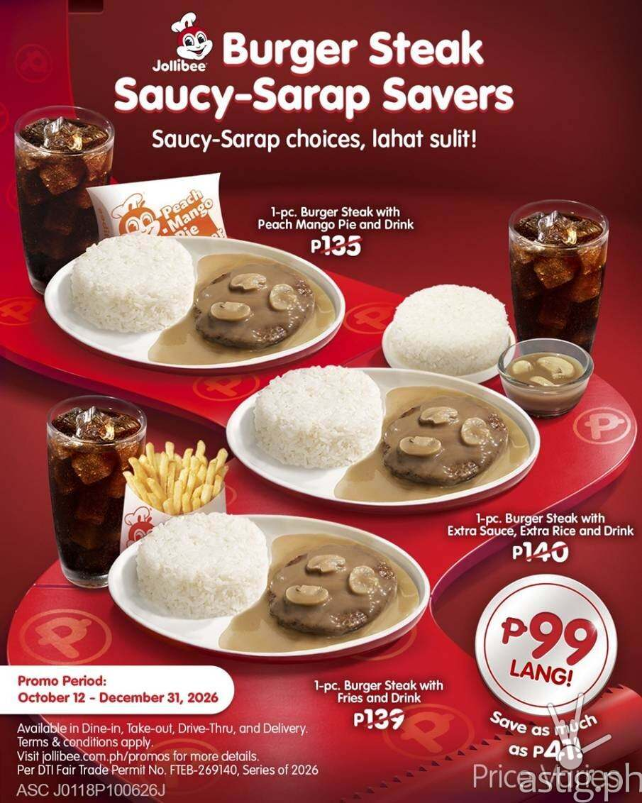
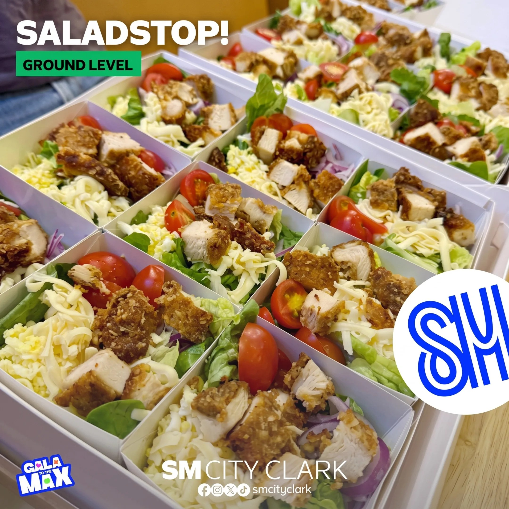

Jollibee puts a ₱99 Burger Steak meal on the board through Dec 31
12 Oct 2026
ASTIG, citing Jollibee Philippines: The Burger Steak Saucy-Sarap Savers line is live nationwide from Oct 12 to Dec 31, starting at ₱99 with a drink. Bundles pair the beef patty and gravy with extra rice and extra sauce for heavy eaters, or with fries or Peach Mango Pie. Dorothy Ching, vice president for marketing, said the set is built for “greater value and flexibility.” Select combinations save up to ₱41 versus ordering the same items one by one. Channels: counter, GrabFood, foodpanda, and the Jollibee site. Operator read: this is not a weekend flash. It runs through the full holiday quarter, which means the national value ceiling for a rice meal is ₱99 until New Year’s Eve. Two moves. First, price one of your own rice combos to sit on or just above that number and advertise it as the everyday order, not a limited promo. Second, if you refuse to go that low, pick one daypart (lunch rush or after-school) and fight with portion or a free add-on instead of cutting the list price, the same way McDo’s bank-linked ₱1.75 add-on buys traffic without rewriting the menu board. Flag: this item is a brand promo.
Open ASTIG

SaladStop opens at SM City Clark as the tech hub hits full occupancy
13 Oct 2026
Homes.ph: SaladStop! has opened on the ground level of SM City Clark in Angeles, Pampanga, pitching custom bowls, wraps, and salads to a catchment that now includes a fully leased IT-BPM office park. The store carries the usual signatures (Hail Caesar, Oh Crab!, Tuna San) plus a Create-Your-Own station with more than 35 toppings and 18 locally made dressings. Homes.ph notes the Clark Tech Hub inside the SM complex is at 100% occupancy across more than 100,000 sqm, mostly global BPO and multinational tenants, with Tech Hub Tower 11 adding about 20,000 sqm more. Operator read: healthy-premium formats follow daytime desk density, not just weekend mall traffic. Clark is the clearest north-of-Manila proof. For a Calamba or Santa Rosa opener, the same filter applies: Nuvali, Broadfield, and the SM Nuvali corridor only work if the weekday lunch crowd is already there. Count office seats and school enrollment before you bid on GLA. SaladStop’s Philippine franchise sits with SSI’s Specialty Food Retailers, and the brand already tied protein sourcing to a 2030 net-zero target earlier this year, so expect more plant-protein SKUs on the board as it expands outside Metro Manila.
Open Homes.ph